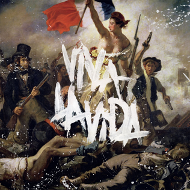

Es una banda británica de pop rock y rock alternativo formada en Londres en 1996. Está integrada por Chris Martin, Jon Buckland, Guy Berryman y Will Champion. Es considerada por críticos y expertos musicales como uno de los grupos musicales más relevantes de la historia, principalmente desde la década de los 2000, los 2010, y en la actualidad.
La nueva gira de los británicos plantea un desafío de cara a las nuevas formas de disfrutar los shows en vivo. Para lograrlo, se plantearon generar conciencia activa en sus propios shows para generar un cambio positivo en relación al cuidado de los recursos naturales. De esta forma, los principales ejes del Tour son:
Disminuir el consumo, reciclar ampliamente y reducir nuestras emisiones de CO2 en un 50%. En esta gira trabajarán en reducir las emisiones directas en un 50% en comparación con la gira más reciente de la banda (2016-17).
Apoyar las nuevas tecnologías ecológicas y desarrollar nuevos métodos de turismo sostenibles y con muy bajas emisiones de carbono.
Hacer que el recorrido sea lo más beneficioso posible para el medio ambiente financiando una serie de proyectos basados ??en la naturaleza y la tecnología, y reduciendo significativamente más CO2 del que produce el recorrido.

La letra de esta canción hace una clara referencia a Luis XVI de Francia, quien fue el último rey de Francia antes de la caida de la monarquia por parte de la Revolución francesa, en la cual el pueblo se alzó contra el gobierno; esto aunque no se dice claramente se puede entender en varias oraciones de la canción. En supuesto la canción es cantada por el rey, que expresa su pesar, hace mención de intrigas de la corte y destierro.

Con versos susurrados y el característico falsete de Chris Martin, Yellow, lanzada en junio de 2000, marcaba el inicio de la carrera de éxito de Coldplay. Es un buen sello de identidad y el propio Martin dijo que el título se refiere al carácter de la banda y que significa: "Brillo, esperanza y devoción". El cantante comentó que la canción habla precisamente sobre la devoción y se dirige hacia un amor no correspondido.